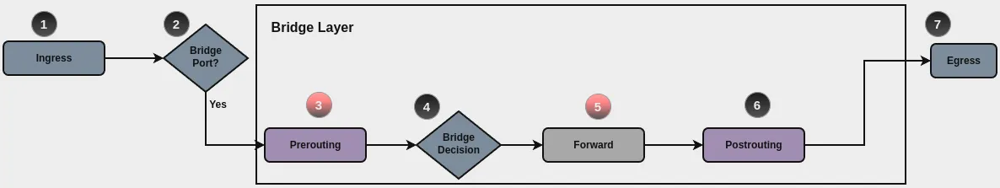
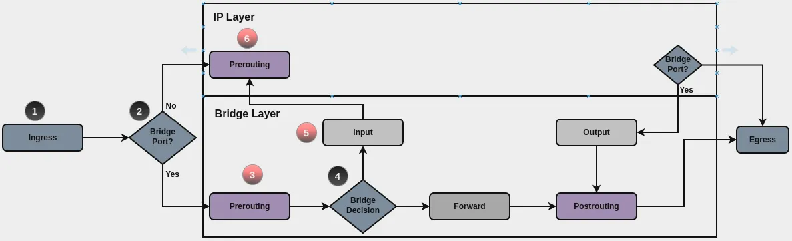
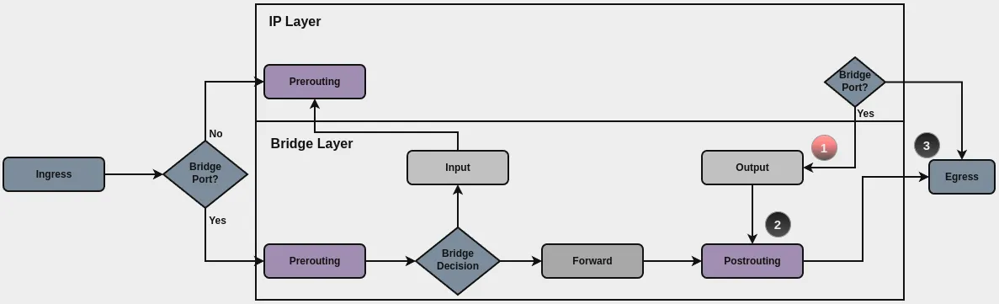

Bridge layer
Packet flow
The firewall processes packets that pass through a bridge at different processing points, depending on whether the bridge forwards the packet, delivers the packet to the router, or the router sends the packet out through the bridge.
Forwarded packets
When a router receives a packet on a bridge member interface, the firewall first
processes it at the prerouting processing point, before the bridge makes a
forwarding decision. If the bridge forwards the packet between its member
interfaces, the firewall then processes it at the forward processing point.
You can configure the rules for these processing points under
set firewall bridge prerouting filter ... and
set firewall bridge forward filter ....

Packets delivered to the router
When a packet received on a bridge member interface is for the router itself,
the firewall first processes the packet at the
prerouting processing point and then at the input processing point. The
bridge layer passes an IPv4 or IPv6 packet that it does not drop to the IP
layer, which then processes the packet starting at the prerouting processing
point.
You can configure the rules for the input processing point under
set firewall bridge input filter ....

Packets the router sends out through a bridge
When the router sends a packet out through a bridge, the firewall processes the
packet at the output processing point. The packet can be a routed packet or a
packet that the router generates.
You configure the rules for the output processing point under
set firewall bridge output filter ....

Bridge rule sets
The firewall uses rule sets to process packets. A rule set includes numbered rules and a default action, and is either base or custom:
A base rule set is named after a processing point:
prerouting,input,forward, oroutput. The firewall applies it to the packets at that processing point.A custom rule set is configured with a name that you choose. The firewall applies the custom rule set to the packets that a base rule set sends to it with the
jumpaction, directly or through other custom rule sets. The firewall applies it at the processing point of that base rule set. If no base rule set sends packets to the custom rule set, the firewall does not apply it.
Configuration
Rules
A rule has a number from 1 to 999999, an action, and, optionally, one or more matching criteria, such as the source address, the protocol and destination port, the Ethernet type, or the VLAN ID. When the packet meets all criteria in a rule, the firewall applies the rule’s action. If a rule has no criteria, the firewall applies the rule’s action to every packet that reaches the rule.
The firewall applies the rules to a packet in order, from lowest to highest.
Depending on the action, the firewall then continues with another rule, for
example, after continue, jump, or notrack, or stops applying rules to the
packet, for example, after accept, drop, or queue.
Matching criteria
This section describes the matching criteria that are available only in bridge layer rules. The IPv4 and IPv6 pages describe the criteria that bridge layer rules share with IPv4 and IPv6 rules:
Addresses:
[source | destination] address,[source | destination] address-mask,[source | destination] mac-address, and[source | destination] mac-address-mask.Ports:
[source | destination] port.Protocols:
protocol,icmp,icmpv6, andtcp.Packet fields:
dscp,dscp-exclude,ttl,hop-limit,fragment,packet-length,packet-length-exclude,packet-type, andipsec.Rate and time:
limitandtime.Marks and connection state:
mark,state,connection-mark, andconnection-status.Interfaces:
inbound-interfaceandoutbound-interface.
To configure a shared criterion in a Bridge layer rule, replace ipv4 or ipv6
in the command with bridge. For example,
set firewall bridge forward filter rule 10 source address 192.0.2.2.
Apply the rule’s action to the packets with the specified Ethernet type.
802.1q: Packets with a customer VLAN tag.802.1ad: Packets with a service VLAN tag.arp: ARP packets.ipv4: IPv4 packets.ipv6: IPv6 packets.
Prepend ! to the value to apply the rule to all other Ethernet types, for
example ethernet-type !arp.
Example:
set firewall bridge forward filter rule 10 ethernet-type arp
Apply the rule’s action to the VLAN-tagged packets whose VLAN tag carries the specified Ethernet type.
The values are the same as for ethernet-type. Prepend ! to the value to
apply the rule to all other Ethernet types.
Example:
set firewall bridge forward filter rule 10 vlan ethernet-type ipv4
Apply the rule’s action to the packets with the specified VLAN ID.
Enter a VLAN ID from 0 to 4095, or a range such as 100-200.
Example:
set firewall bridge forward filter rule 10 vlan id 22
Apply the rule’s action to the packets with the specified VLAN priority, which is the PCP of the VLAN tag.
Enter a priority from 0 to 7, or a range such as 4-7.
Example:
set firewall bridge forward filter rule 10 vlan priority 5
Reference a group in a criterion
You can reference a group in the matching criteria for addresses, networks, MAC addresses, ports, and interfaces. A group that a criterion refers to must exist when you commit the configuration. Otherwise, the commit fails.
IPv4 address group
Apply the rule’s action to the packets whose source or destination IPv4 address is a member of the specified group.
Define the group with set firewall group address-group. Prepend ! to the
group name to apply the rule to the packets whose IPv4 address is not a member
of the group.
Example:
set firewall bridge forward filter rule 10 source group ipv4-address-group SERVERS
IPv6 address group
Apply the rule’s action to the packets whose source or destination IPv6 address is a member of the specified group.
Define the group with set firewall group ipv6-address-group. Prepend ! to
the group name to apply the rule to the packets whose IPv6 address is not a
member of the group.
Example:
set firewall bridge forward filter rule 10 destination group ipv6-address-group SERVERS6
IPv4 network group
Apply the rule’s action to the packets whose source or destination IPv4 address belongs to a network of the specified group.
Define the group with set firewall group network-group. Prepend ! to the
group name to apply the rule to the packets whose IPv4 address does not belong
to any network of the group.
Example:
set firewall bridge forward filter rule 10 source group ipv4-network-group LAN4
IPv6 network group
Apply the rule’s action to the packets whose source or destination IPv6 address belongs to a network of the specified group.
Define the group with set firewall group ipv6-network-group. Prepend ! to
the group name to apply the rule to the packets whose IPv6 address does not
belong to any network of the group.
Example:
set firewall bridge forward filter rule 10 source group ipv6-network-group LAN6
MAC group
Apply the rule’s action to the packets whose source or destination MAC address is a member of the specified group.
Define the group with set firewall group mac-group. Prepend ! to the group
name to apply the rule to the packets whose MAC address is not a member of the
group.
Example:
set firewall bridge forward filter rule 10 source group mac-group OFFICE
Port group
Apply the rule’s action to the packets whose source or destination port is a member of the specified group.
Define the group with set firewall group port-group. Prepend ! to the group
name to apply the rule to the packets whose port is not a member of the group.
Use this criterion together with protocol tcp, protocol udp, or
protocol tcp_udp in the same rule. A rule cannot have both source port and
source group port-group, or both destination port and
destination group port-group. Otherwise, the commit fails.
Example:
set firewall bridge forward filter rule 10 destination group port-group WEB
Inbound interface group
Apply the rule’s action to the packets that the router receives on an interface that is a member of the specified group.
Define the group with set firewall group interface-group. Prepend ! to the
group name to apply the rule to the packets that the router receives on an
interface that is not a member of the group.
You cannot use inbound-interface name and inbound-interface group in the
same rule. Otherwise, the commit fails.
Example:
set firewall bridge forward filter rule 10 inbound-interface group LAN
Outbound interface group
Apply the rule’s action to the packets that the router sends out through an interface that is a member of the specified group.
Define the group with set firewall group interface-group. Prepend ! to the
group name to apply the rule to the packets that the router sends out through an
interface that is not a member of the group.
You cannot use outbound-interface name and outbound-interface group in the
same rule. Otherwise, the commit fails.
Example:
set firewall bridge forward filter rule 10 outbound-interface group WAN
Actions
When a packet reaches a rule, the action applies if the packet meets all of its
criteria, if the rule has any. An action takes effect at the processing point at
which the firewall applies the rule set. The notrack action is the exception:
it marks the packet as untracked, and connection tracking ignores the packet at
all subsequent processing points as well.
Configure the action that the firewall applies to a packet.
accept: The firewall accepts the packet and stops applying rules to the packet at the processing point. Rules at the following processing points can still drop it.drop: The firewall drops the packet.queue: The firewall sends the packet to an application through a queue and stops applying rules to the packet at the processing point. The application decides whether the packet continues.reject: The firewall drops the packet and, for IPv4 and IPv6 packets that were not sent to a broadcast or multicast address, sends a response to the sender. Only rules in thepreroutingbase rule set accept this action.continue: The firewall continues with the next rule.jump: The firewall sends the packet to the custom rule set thatjump-targetspecifies and applies the rules of that rule set to the packet.return: In a custom rule set, the firewall returns to the rule set that sent the packet to the custom rule set and continues there. In a base rule set, the firewall accepts the packet without applying the default action.notrack: The firewall marks the packet as untracked and continues with the next rule. Only rules in thepreroutingbase rule set accept this action.
Every rule requires an action. Otherwise, the commit fails.
Example:
set firewall bridge forward filter rule 10 action accept
Jump to a custom rule set
Configure the custom rule set to which the jump action sends the packet.
A rule with the jump action requires jump-target, and jump-target requires
the jump action. The custom rule set that jump-target specifies must exist.
Otherwise, the commit fails.
Example:
set firewall bridge forward filter rule 10 jump-target BR-CUSTOM
Send packets to a queue
Configure the queue to which the queue action sends the packet.
Enter a queue number from 0 to 65535, or a range of queue numbers such as 0-3.
When no queue is configured, the queue action sends the packet to queue 0.
The rule must have the queue action. Otherwise, the commit fails.
Example:
set firewall bridge forward filter rule 10 queue 5
Let packets continue through the firewall when no application can receive them from the queue, instead of dropping them.
The rule must have the queue action. Otherwise, the commit fails.
Example:
set firewall bridge forward filter rule 10 queue-options bypass
Configure the firewall to assign a packet to a queue according to the CPU on which the firewall applies the rule.
For example, with queue 4-7, packets on CPU 0 go to queue 4, on CPU 1 to queue
5, on CPU 2 to queue 6, and on CPU 3 to queue 7. If CPUs outnumber queues, the
assignment repeats: packets on CPU 4 go to queue 4 again.
Without fanout, the firewall chooses the queue from the range based on the
packet fields, for example, the source address, destination address, and
protocol.
The rule must have the queue action and a range in queue. Otherwise, the
commit fails.
Example:
set firewall bridge forward filter rule 10 queue-options fanout
Default actions
The default action applies to a packet that still requires processing after all
rules of the rule set have been applied. If you do not configure the default
action, the firewall uses accept in a base rule set and drop in a custom
rule set.
Configure the default action that the firewall applies to a packet.
accept: The firewall accepts the packet and stops applying rules to the packet at the processing point. Rules at the following processing points can still drop the packet.drop: The firewall drops the packet.continue: Available only in a custom rule set. The firewall returns to the rule set that sent the packet to the custom rule set and continues there.return: Available only in a custom rule set. Works the same ascontinue.jump: Available only in a custom rule set. The firewall sends the packet to the custom rule set thatdefault-jump-targetspecifies and applies the rules of that rule set to the packet.reject: Available only in a custom rule set. The firewall drops the packet and, for IPv4 and IPv6 packets that were not sent to a broadcast or multicast address, sends a response to the sender. Only thepreroutingandinputbase rule sets can send packets to a custom rule set with this default action. Otherwise, the commit fails.
A custom rule set with the default action jump requires default-jump-target.
Otherwise, the commit fails.
Example:
set firewall bridge forward filter default-action drop
set firewall bridge name BR-CUSTOM default-action return
Configure the target custom rule set of the jump default action.
The default action of the sending custom rule set must be jump, and the target
must be another existing custom rule set. Otherwise, the commit fails.
Example:
set firewall bridge name BR-CUSTOM default-jump-target BR-NEXT
Logging
Use log to log the packets to which a rule’s action applies, and default-log
to log the packets to which the default action applies. For each logged packet,
the firewall writes a log message to the system log at the warn level. Log
messages produced with log begin with the prefix
[bri-<point>-<name>-<rule>-<action>], and log messages produced with
default-log begin with the prefix [bri-<point>-<name>-default-<action>],
where:
<point>isPREfor theprerouting,FWDfor theforward,INPfor theinput, andOUTfor theoutputprocessing point. For a custom rule set,<point>isNAM.<name>isfilterfor a base rule set, or the name of the custom rule set.<rule>is the rule number.<action>is the first letter of the action in uppercase, for exampleAforacceptandDfordrop.
Log the packets to which the firewall applies the action of the specified rule.
Example:
set firewall bridge forward filter rule 10 log
Log a packet to which the firewall applies the default action of the specified rule set.
Example:
set firewall bridge forward filter default-log
Write an additional log message for the packet at the specified severity level.
The additional message has no prefix, and the level of the log message produced
with log does not change.
Also configure log for the rule. Otherwise, the commit fails.
Example:
set firewall bridge forward filter rule 10 log-options level notice
Send an additional message about the packet to the specified log group.
The additional message has no prefix.
Also configure log for the rule. Otherwise, the commit fails.
Example:
set firewall bridge forward filter rule 10 log-options group 10
Configure the number of bytes of the packet that the firewall includes in the message to the log group.
Also configure log and log-options group. Otherwise, the commit fails.
Example:
set firewall bridge forward filter rule 10 log-options snapshot-length 128
Configure the number of messages that the firewall queues before it sends them to the log group.
Also configure log and log-options group. Otherwise, the commit fails.
The setting has an effect only if the value is greater than 0 and less than the log group’s queue threshold, which is 100 unless the application that reads the group changes it.
Example:
set firewall bridge forward filter rule 10 log-options queue-threshold 20
Descriptions
Add a description to a rule set or to a rule to explain its purpose. The
description of a rule set appears in the output of show firewall summary, and
the description of a rule appears in the output of
show firewall bridge [forward | input | output | prerouting] filter detail and
show firewall bridge name <name> detail.
Configure a description for the rule set.
The description can contain up to 255 characters. Descriptions that contain spaces can be entered in single or double quotes.
Example:
set firewall bridge forward filter description 'Forwarded bridge traffic'
Configure a description for the rule.
The description can contain up to 255 characters. Descriptions that contain spaces can be entered in single or double quotes.
Example:
set firewall bridge forward filter rule 10 description 'Accept guest VLAN'
Disable a rule
You can disable a rule instead of deleting it. A disabled rule stays in the
configuration, and you can enable it again by deleting disable.
Disable the rule.
The firewall does not apply a disabled rule, and the show firewall commands do
not list it.
The commit checks a disabled rule in the same way as any other rule, so a disabled rule must be valid. Otherwise, the commit fails.
Example:
set firewall bridge forward filter rule 10 disable
Packet modifications
Rules can modify packets that match their criteria. The firewall applies the modifications before it applies the action of the rule, so the following rules and the following processing points work with the modified packet.
Packet modifications are available only in the base rule sets of the
prerouting, forward, and output processing points. Of these, only the
forward and output base rule sets can set the connection mark.
Configure the DSCP value that the firewall sets in the IPv4 packets.
Example:
set firewall bridge forward filter rule 10 set dscp 46
Configure the packet mark that the firewall sets on the packets.
The packet mark is a number that stays with the packet while the router
processes it. Rules can use it in the mark criterion.
Example:
set firewall bridge forward filter rule 10 set mark 100
Configure the MSS value that the firewall sets in the TCP packets that carry the MSS option.
Example:
set firewall bridge forward filter rule 10 set tcp-mss 1400
Configure the TTL value that the firewall sets in the IPv4 packets.
Example:
set firewall bridge forward filter rule 10 set ttl 128
Configure the hop limit that the firewall sets in the IPv6 packets.
Example:
set firewall bridge forward filter rule 10 set hop-limit 64
Configure the connection mark that the firewall sets on the connection of the packet.
The connection mark is a number that stays with the connection in connection
tracking. Rules can use it in the connection-mark criterion.
Example:
set firewall bridge forward filter rule 10 set connection-mark 123
Operation
Rule sets
Use the following commands to show information about rule sets, their rules, the states of the global state policy, and firewall groups.
Show the rules of all IPv4, IPv6, and Bridge rule sets with the action, protocol, conditions, and packet and byte counters of each rule, and the states of the global state policy at the IP layer with their packet and byte counters.
Show the rules of all IPv4, IPv6, and Bridge rule sets with the action, source, destination, interfaces, and packet and byte counters of each rule, and the states of the global state policy at the IP layer with their packet and byte counters.
Show the rules of all IPv4, IPv6, and bridge rule sets with the description, action, source, destination, interfaces, and packet and byte counters of each rule, and the states of the global state policy at the IP layer with their packet and byte counters, in a vertical list.
Show the rules of all bridge rule sets with the action, protocol, conditions, and packet and byte counters of each rule.
Show the rules of the specified base rule set with the action, protocol, conditions, and packet and byte counters of each rule.
Show the rules of the specified base rule set with the description, action, protocol, conditions, and packet and byte counters of each rule, in a vertical list.
Show the specified rule of the base rule set with the action, protocol, conditions, and packet and byte counters.
Show the specified rule of the base rule set with the description, action, protocol, conditions, and packet and byte counters, in a vertical list.
Show the rules of the specified custom rule set with the action, protocol, conditions, and packet and byte counters of each rule.
Show the rules of the specified custom rule set with the description, action, protocol, conditions, and packet and byte counters of each rule, in a vertical list.
Show the specified rule of the custom rule set with the action, protocol, conditions, and packet and byte counters.
Logs
Show the log messages of all IPv4, IPv6, and bridge rule sets and of the global state policy.
The command does not show the messages of the prerouting base rule sets.
Show the log messages of all Bridge rule sets.
The command does not show the messages of the prerouting base rule set. To
show them, use show log firewall bridge prerouting.
Show the log messages of the specified base rule set.
Show the log messages of the specified rule of the base rule set.
The command does not show the messages of the rules with the queue and
notrack actions.
Example
The following example defines an interface group, the rules at the forward
processing point, and a custom rule set that rule 30 sends packets to. The
default action of the forward base rule set drops and logs the packets that no
rule has accepted.
set firewall group interface-group TRUNK-RIGHT interface 'eth3'
set firewall bridge forward filter default-action 'drop'
set firewall bridge forward filter default-log
set firewall bridge forward filter rule 10 action 'continue'
set firewall bridge forward filter rule 10 inbound-interface name 'eth2'
set firewall bridge forward filter rule 10 vlan id '22'
set firewall bridge forward filter rule 20 action 'drop'
set firewall bridge forward filter rule 20 inbound-interface group 'TRUNK-RIGHT'
set firewall bridge forward filter rule 20 vlan id '60'
set firewall bridge forward filter rule 30 action 'jump'
set firewall bridge forward filter rule 30 jump-target 'TEST'
set firewall bridge forward filter rule 30 outbound-interface name '!eth1'
set firewall bridge forward filter rule 35 action 'accept'
set firewall bridge forward filter rule 35 vlan id '11'
set firewall bridge forward filter rule 40 action 'continue'
set firewall bridge forward filter rule 40 destination mac-address '00:00:5e:00:53:02'
set firewall bridge forward filter rule 40 source mac-address '00:00:5e:00:53:01'
set firewall bridge name TEST default-action 'accept'
set firewall bridge name TEST default-log
set firewall bridge name TEST rule 10 action 'continue'
set firewall bridge name TEST rule 10 log
set firewall bridge name TEST rule 10 vlan priority '0'
To view the rules of the forward base rule set and of the custom rule set
TEST with their counters, use:
show firewall bridge
To view the log messages of the forward base rule set and of the custom rule
set TEST, use:
show log firewall bridge